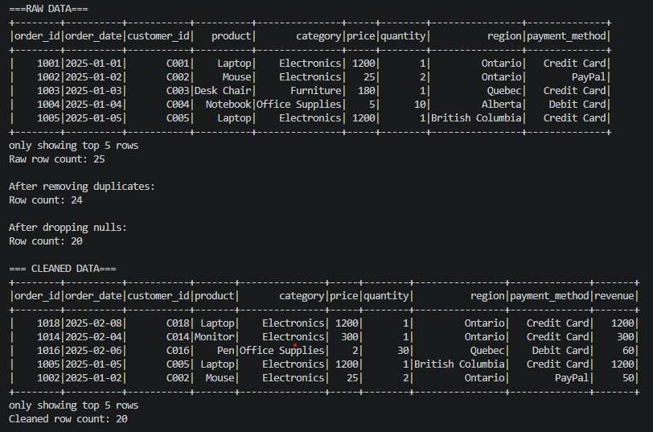
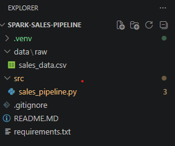
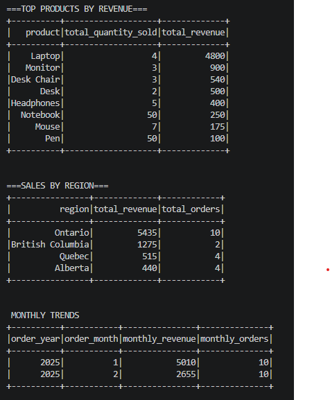

What it does
This pipeline loads raw CSV sales data into Spark, performs cleaning and validation, creates transformed fields such as revenue and date-based features, generates business insights, and exports the final outputs.
Data Pipeline • PySpark • Data Engineering
A beginner-to-intermediate Spark pipeline built to ingest raw e-commerce sales data, clean and transform it, generate business insights, and export processed outputs for analysis.
Overview
This pipeline loads raw CSV sales data into Spark, performs cleaning and validation, creates transformed fields such as revenue and date-based features, generates business insights, and exports the final outputs.
I wanted a project that demonstrated Spark-style data handling and transformation logic while still being approachable and easy to explain in a portfolio or interview setting.
Python, PySpark, pandas, and Apache Spark running in local mode.
Project Media

Terminal output showing the Spark pipeline run, including ingestion, transformation, and export steps.

VS Code project structure showing data, output, src, and supporting files.

Project outputs displaying aggrgated sales data.
Implementation
The workflow begins by loading raw CSV data into a Spark DataFrame, with schema inference and initial structure validation.
The pipeline removes duplicates, drops rows with missing critical values, filters invalid numeric fields, and converts date columns into usable formats.
Derived fields are created to support analysis, including revenue calculations and extracted year and month values from order dates.
The project generates higher-level insights such as top products by revenue, regional sales summaries, and monthly revenue trends, then exports cleaned and aggregated outputs to CSV.
Results
Loading data into Spark, applying transformations, and producing useful outputs in a structured pipeline.
Turning raw transaction data into clearer summaries such as revenue by product, region, and month.
This project shows practical data engineering structure while staying readable enough for interviews and recruiter review.
Notes